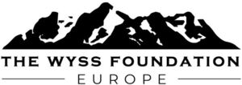

Trade Mark Journal No.2025/039 26 September 2025
WO0000001875016 (16,25,35,36,41)
Office of origin: Switzerland
Date of International Registration:12 June 2025
Date of designation in the UK:
12 June 2025

International priority date claimed: 17 January 2025
(Switzerland)
(826828)
- Class 16
- Picture books; anniversary books; commemorative books; books; photo albums; albums; printed visual aids; printed teaching materials; printed reports; printed research reports; printed publications; printed matter; printed matter, including books, magazines, brochures, prospectuses and other publications; printed matter of all kinds; printed matter; photographs (printed); printed works; printed educational materials; printed training material; graphic prints; printed matter; printed teaching activity guides; printed guides; printed graphs; postcards; pictures; calendars.
- Class 25
- Clothing, shoes, headwear, clothing accessories, namely, gloves (apparel), belts (apparel), long scarves.
- Class 35
- Organization of events, exhibitions, fairs and shows for promotional purposes and for raising public awareness in the field of human rights, environmental protection and social rights throughout the world and for promoting sustainable development; organization of events, exhibitions, fairs and shows for promotional purposes in the artistic field; organization of events, exhibitions, fairs and shows for promotional purposes in the scientific field; advertising promotion for raising awareness on human rights throughout the world and on issues and concerns with respect to human rights, the environment, social rights throughout the world and for promoting sustainable development; advertising promotion in the scientific field; advertising promotion in the artistic field.
- Class 36
- Providing funding for scientists, researchers, scientific research projects, scientific programs and publications in the field of medical research, health and life sciences; providing funding for scientists, researchers, scientific research projects, scientific programs and publications in the field of environmental protection and sustainable development; providing funding in the context of national and international cooperation in the field of scientific research; providing funding for the organization of meetings and congresses; providing funding for artists, art projects and programs; providing funding for scientists, researchers, scientific research projects, scientific programs and publications in the field of social sciences and social rights; providing funding for humanitarian projects; arranging and setting up financing for humanitarian projects; fund raising; financial sponsorship.
- Class 41
- Preparation and conducting of colloquiums, conferences and congresses; organization and conducting of colloquiums, conferences, conventions and symposiums; education services; information services in the field of education; preparation and hosting of seminars, workshops (education), congresses, colloquiums, distance learning courses and exhibitions for cultural purposes; preparation and hosting of meetings in the field of education; organization of competitions (education or entertainment); providing online information with respect to education or entertainment; academies (education); education, teaching and training; publication of educational and training guides; recording, production and distribution of films, video and audio recordings, radio and television programs; publication of books in the field of education.
Wyss Foundation Europe
Representative: Lenz & Staehelin, Route de Chêne 30, CH-1211 Genève 6, SWITZERLAND